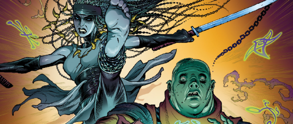

The warrior Wrath and her mage companion Bode were on the losing side of a great war and have been declared feral and foe: doomed to execution unless they can wrangle some kind of deal from their captors.
Taking a postmodern stance, this is a fantasy world that knows about World of Warcraft as well as classic fantasy tropes such as intelligent swords. We could argue a step further, as the language used in-world demonstrates knowledge of the terminology used by the players of games.
Art by Richard Elson
| Story Title | Parts | Pages | w indicates a wraparound coverCovers | Year(s) | Issues | Writer | Artist | Colourist | Letterer |
|---|---|---|---|---|---|---|---|---|---|
| Feral & Foe | 12 | 65 | 2163: Richard Elson 1 | 2019-2020 | Reprints: M447 (supplement)2162-2169, 2171-2174 | Dan Abnett | Richard Elson | Richard & Joe Elson | Annie Parkhouse |
| Feral & Foe II | 12 | 67 | 2227: Richard Elson1 | 2021 | 2224-2232, 2234-2236 | Dan Abnett | Richard Elson | <-- | Jim Campbell |
| year | episodes | pages |
| 2002 | 0 | 0 |
| 2003 | 0 | 0 |
| 2004 | 0 | 0 |
| 2005 | 0 | 0 |
| 2006 | 0 | 0 |
| 2007 | 0 | 0 |
| 2008 | 0 | 0 |
| 2009 | 0 | 0 |
| 2010 | 0 | 0 |
| 2011 | 0 | 0 |
| 2012 | 0 | 0 |
| 2013 | 0 | 0 |
| 2014 | 0 | 0 |
| 2015 | 0 | 0 |
| 2016 | 0 | 0 |
| 2017 | 0 | 0 |
| 2018 | 0 | 0 |
| 2019 | 1 | 10 |
| 2020 | 11 | 55 |
| 2021 | 12 | 67 |
| 2022 | 0 | 0 |